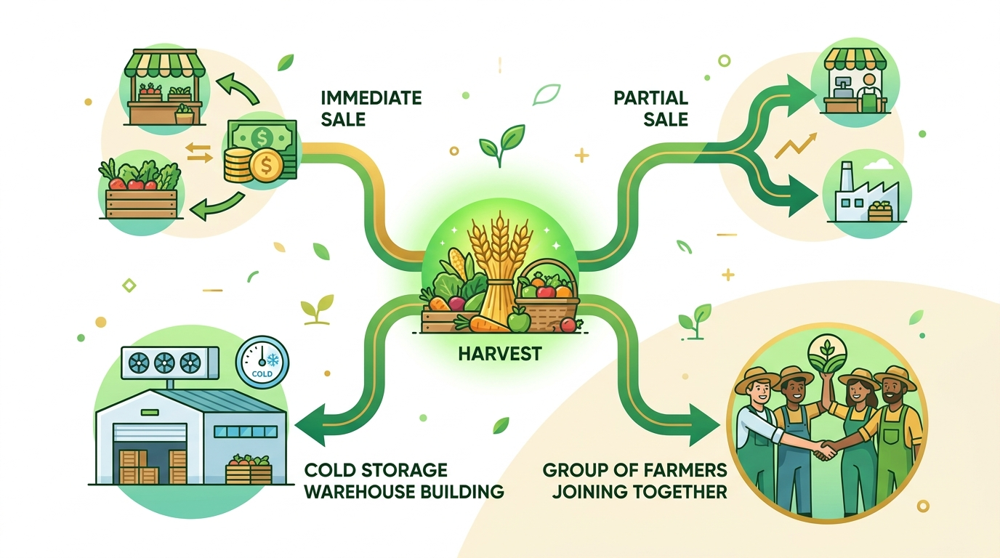

0:00 – 0:10 Bogura, March: harvest day
আলু রাখবেন না বেচবেন?
Store or sell, and until when?
A farmer stands next to 36 sacks of potato. Sell today at the trader's price, or pay a cold storage and wait? Guess wrong and a season's profit is gone.
KrishiVaultBetter predictions, smarter storage, easier loans, better buyers
Every March the same question: sell now, or store and wait? The answer depends on the price, the rent, the crop size and when the farmer needs cash. Nobody does that sum for the farmer. KrishiVault does.
0:10 – 0:25 The problem
The storage trap হিমাগারের ফাঁদ
1
৳300 a sack, for 1 month or for 9
Cold-storage rent is flat for the season (84 kg sack). Selling after a month or two pays the full rent before prices rise: a loss.
2
Crop size sets the price
After a normal crop, prices nearly doubled by November. After a crop 6% above the trend, they stayed flat all year.
3
Cash at harvest, so traders take the rise
With input debts to pay, farmers sold 64% of the harvest at once and stored only 13.6% for sale; traders bought 97.6% of the potatoes in cold storage (field study, Bogura and Munshiganj, 2016).
The farmer cannot wait and cannot do the sum. The rise after the harvest goes to whoever has the cash and the information.
Potato price after the harvest, ৳ a kg
Retail, national middle of town markets (WFP); months with 4+ market reports
2024, after a normal crop2025, after a crop 6% above the trend
Sources: BBS production 2012-13 to 2024-25; WFP retail prices (HDX); team field notes; potato value-chain study, Kahaloo and Munshiganj, 2016 fieldwork.
Bangladesh grew 11.6 million tonnes of potato last season, and farmers still lose the value. Three things trap them. The rent is the same for one month or nine. Crop size decides prices: 2024 doubled, 2025 stayed flat. And cash: with debts due at harvest, farmers sold almost two thirds at once, while traders bought nearly all the stored potatoes and took the rise.
0:25 – 0:40 The solution
One phone call, in Bangla একটি ফোন কল
The farmer says (Bogura dialect)
“হামার ৮০ মণ আলু উঠছে, ফড়িয়া ১৬ টেকা দিবার চায়, ২৫ হাজার টেকা নাগবে ৪ দিনের মইধ্যে।”
80 maunds of potato are in; the trader offers ৳16 a kg; I need ৳25,000 within 4 days.
KrishiVault answers, after reading every number back
“এখন ১৯ বস্তা বেচুন, বাকি ১৭ বস্তা হিমাগারে রেখে ডিসেম্বরে বেচুন।”
Sell 19 sacks now; store the other 17 until December.
৳54,700on average, ৳7,300 more than selling everything today
৳36,800in a bad case (1 in 10): the risk is said out loud
৳25,000in hand today from the 19 sacks: the cash need is met
The SMS receipt (the real text the engine sends)
কৃষিভল্ট: ৩৬ বস্তা আলু। পরামর্শ: এখন ১৯ বস্তা বেচুন, ১৭ বস্তা ডিসেম্বর পর্যন্ত রাখুন। গড়ে প্রায় ৫৪,৭০০ টাকা (খারাপ হলে ৩৬,৮০০)। এখন সব বেচলে ৪৭,৪০০ টাকা। নিশ্চিত নয়।
signed by the server:
the page cannot change it
Net profit after a ৳14 a kg growing cost: about ৳12,900 on average, against ৳5,600 if everything is sold today, and the call says a bad case can lose ৳5,000. A button phone is enough: speak, press keys, or answer a USSD menu with two numbers. Press 2 and the cold storage gets a space request.
No app, no smartphone. The farmer speaks in dialect; KrishiVault reads the numbers back, then answers in taka with the risk and the net profit after the growing cost. Press 2 for the cold storage; an SMS keeps the record. On USSD it takes just two numbers. All of this works today in our previews.
0:40 – 0:52 How it decides
Three answers, in taka, with the risk
When storing will not pay
Sell now
এখন বেচুন
A big crop, a weak price outlook, or a cash need no loan can cover.
At the harvest, when storing pays
Sell 30-40%, store the rest
কিছু বেচুন, বাকিটা রাখুন
Never the whole crop on one month. More is sold if cash is needed; the rest waits for the best month.
Already in cold storage
Hold until month X
রেখে ডিসেম্বরে বেচুন
The rent is paid; hold while storing beats selling in 8 of 10 price paths, and the bad case is small.
For every month to December, across 2,000 simulated price paths: the kilos left after weight loss (8.65% a season) × that month's price, minus rent, sacks, carrying, selling and loan interest. The answer comes with the chance that storing pays, the bad case (1 in 10), the price storing needs to pay, and the net profit; the plan's staggered exit (30/40/30) is shown beside it.

Statistics where the future is uncertainA price outlook driven by crop size (BBS, 13 seasons, 64 districts) and real prices (WFP). Always a range, never a promise.
Exact sums where the money isThe engine is fixed rules: every taka can be explained, and every cost can be edited.
Language AI only to understandGemini helps with dialect and wording; a number lock rejects any sentence that changes a number.
Three answers. Sell now when storing will not pay. At the harvest, when storing pays, sell thirty to forty percent and store the rest: we never bet the whole crop on one month. Potatoes already in store: hold until the best month. AI where uncertainty and language live, fixed rules where money lives. Gemini can never change a number the farmer hears.
0:52 – 1:05 Does it work?
Replayed on real seasons, without hindsight
The engine sees only what was known on the day: earlier seasons' prices, and the crop estimated from its planted area. Then we compare with what really happened.
March 2025 · a big crop (+7% at the harvest)
KrishiVault saidSell now
What really happened: prices stayed flat. Storing all 36 sacks would have
lost ৳17,100 to ৳25,300
whichever month they were sold, after rent and losses: a small profit turned into a loss
March 2024 · a normal crop
KrishiVault saidSell 11 sacks now, store 25 until December
What really happened: prices nearly doubled. Following the advice brought
৳17,710 more
than selling all 36 sacks at the harvest: net profit 2.5 times (৳29,450 against ৳11,740)
11% vs 52%average price miss: our outlook against “prices always rise the usual way”
92%of months, the real price fell inside our 8-in-10 range
2 of 2store-or-sell calls right on seasons the model had not seen
Two seasons only: a first test, not proof. Next: 15 years of DAM market prices, then the same test again. Money for 36 sacks at a farm price of ৳14 (2025) and ৳18 (2024) a kg, moved by the real national price change; net profit after a growing cost of ৳14 a kg (DAE Bogura, 2024-25).
We do not ask you to trust a forecast. We replayed two real seasons using only what was known at the time. The big-crop year: sell now, and storing would have lost up to twenty-three thousand taka. The normal year: sell some, store most, eighteen thousand more: net profit two and a half times. Two seasons is a first test, and we say so.
1:05 – 1:20 Why it is different
The sums, and the cash to wait হিসাব আর অপেক্ষার টাকা
1 · Harvest call
Sacks and cash needed
Two numbers by voice, keypad or USSD. The engine splits: sell this many now, store the rest until a month.
2 · Cold storage
A digital receipt
The cold storage weighs and grades the sacks; the farmer gets the receipt by SMS.
3 · Bank
A loan instead of a forced sale
The receipt backs the loan; the sacks are held for the bank, valued after 8.65% weight loss. The bank decides and pays.
4 · Sale
Everyone paid, in order
An SMS when the price window opens: how many sacks, to whom. Then the cold storage, the bank, and the rest to the farmer.
| Cash at harvest | Price 1-9 months ahead | Store-or-sell sums | Cold-storage link |
|---|
| Traders | Yes, at the harvest-low price | Kept to themselves | No | Hold 97.6% of the stock |
| Price apps | No: an alert pays no debt | Today's prices | No | No |
| Banks alone | No: want land as security | No | No | Cannot check rural stock |
| KrishiVault | Through a bank, against the sacks | A range, from the crop size | In taka, with the risk | Receipts, held for the bank |
Works end to end in our prototype with demo partners; no money moves yet. KrishiVault never lends and never holds the money: the bank pays.
A price alert does not pay today's debt, so the farmer still cannot wait. KrishiVault joins three things in one loop: the sums, the cold storage, and crop-backed cash through a bank. The harvest call gives the split; the cold storage issues a digital receipt; the bank lends against it and the sacks are held for the bank; at the sale the cold storage and the bank are paid first and the farmer keeps the rest.
1:20 – 1:30 Know, calculate, decide, act
Every answer ends with an action
1
Production and price prediction
The season's crop and the price 1 to 9 months ahead, with ranges, for 64 districts.
2 · THE CORE
Store-or-sell engine
Sell now, store until a month, or sell part: after every cost, with the risk.
3
Market access
Buyers and offers ranked by the money that reaches the farmer's hand.
4
Loans against stored sacks
A digital receipt from the cold storage; KrishiVault values the sacks; the bank decides and is repaid from the sale. We never lend.
5
Group storage and selling
Neighbours share a truck, a discount once the cold storage agrees, and buyers one farmer cannot reach.
6
Export intelligence
Where to buy (big crop, low price) and which markets pay after every cost.
7
Profit calculator
Costs and profit per kg, sack, maund and harvest, against selling everything at harvest.
+ GOVERNMENT
Glut warning and farmer figures
Crop size against its trend; by district, with consent and no names: who needed cash within 7 days of harvest.
Know, calculate, decide, act. After the answer the farmer can book cold-storage space, join a group, apply for a loan against the stored sacks, or send the lot to buyers. Partners see the request on their own screen. And government gets something new: a glut warning, and farmer figures by district, only with the farmer's consent.
1:30 – 1:43 Business model
No fee for farmers. Partners pay when they gain.
| Who pays | What they gain | Fee |
|---|
| Farmers | More money for the same harvest; loans instead of selling at the bottom | No fee |
| Cold storages | Grouped farmers that fill space; fees collected at the sale | 4% of the storage fee: ৳12 a sack |
| Banks and microfinance | Security they can check, held for them, valued with a buffer | 1.5% of the loan: ৳4.50 a sack |
| Buyers and processors | Sorted, graded lots straight from cold storage | 1% sourcing fee: about ৳12 a sack |
| Grameenphone | Value-added voice and SMS traffic from farmers | Call revenue shared 50/50 |
| Government and media | Glut warnings, cold-storage fill, farmer figures | Subscriptions |
৳20 lakhto start: one pre-seed round or grant, 12 months
৳17.2 lakhYear 1 revenue: 2,000 farmers, 80,000 sacks; a small loss (−7.3%)
৳1.26 croreYear 2: 15,000 farmers; break-even about month 14-16
৳4.92 croreYear 3: 60,000 farmers, 100 cold storages; 70.5% profit margin
No paid placement. A fee never changes the advice: offers are ranked by the money left in the farmer's hand. A projection from our plan's assumptions; the pilot tests the fees.
Farmers pay no fee. Cold storages, banks, buyers, and government pay when they gain, and Grameenphone shares the call revenue. Twenty lakh taka runs the first year; the projection breaks even in year two. It is a projection, and the pilot tests whether partners pay these fees. The one rule we never break: the advice is not for sale.
1:43 – 1:55 Feasibility and scale
Working today. Piloting at the next harvest.
Working prototype real data
- The call and a USSD menu in the browser: Bangla speech, keypad or two numbers; the same engine
- Screens for field agents (price alerts), cold storages (receipts), banks (hold, payout, split), buyers and government
- SMS through a Bangladeshi gateway: advice, receipts, curing reminders
- Real data: BBS production for 64 districts and 13 seasons; WFP market prices
- 157 automated tests on the sums
demo Cold storages, banks, buyers, receipts and export prices on screen are made up, and labelled so.
The rollout, from the harvest of March 2027
- Months 1-4Kahaloo, Bogura: 50-100 farmers, 1-2 cold storages, one bank or microfinance lender; the first 100 tonnes of crop-backed loans
- Months 5-12Bogura and Munshiganj: 1,000+ farmers, 10 cold storages, group storage, buyers
- Year 2 onRangpur, Dinajpur, Cumilla, Thakurgaon: onion and maize; buyers and export
- Measured: price received against the haat and neighbours; loans taken instead of forced sales; forecast error
What we ask for: ৳20-25 lakh for the first year, and one cold storage and one bank or microfinance lender in Kahaloo to start.
This runs today on real national data, and the whole loop works with demo partners, clearly labelled. At the next harvest we start in Kahaloo with up to a hundred farmers, one or two cold storages and one lender, then Bogura and Munshiganj, then the north. We measure the money that actually reaches farmers.
1:55 – 2:00 KrishiVault
আলু রাখবেন না বেচবেন, কবে বেচবেন: হিসাব করে বলে কৃষিভল্ট।
Store or sell, and until when: KrishiVault does the sums.
So the rise after the harvest reaches the farmer who grew it.
KrishiVaultThank you · ধন্যবাদ
Farmers do not need more information. They need the sum done for them, in taka, with the risk, and one step to act on it. Thank you.